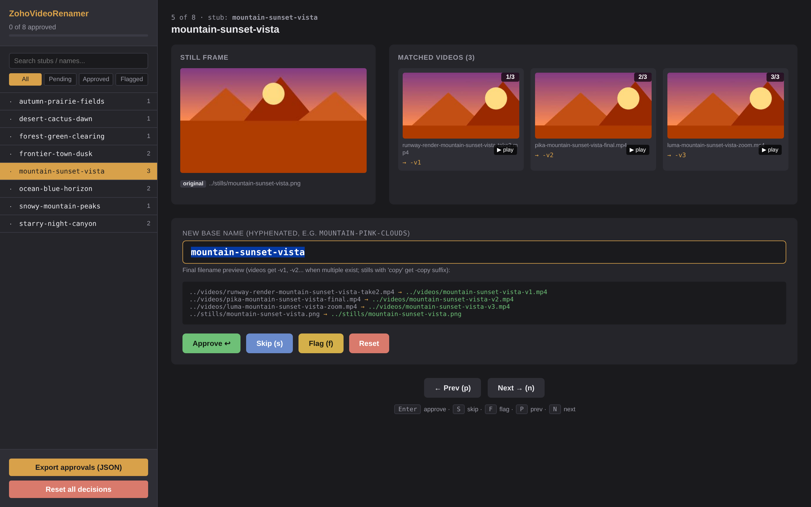
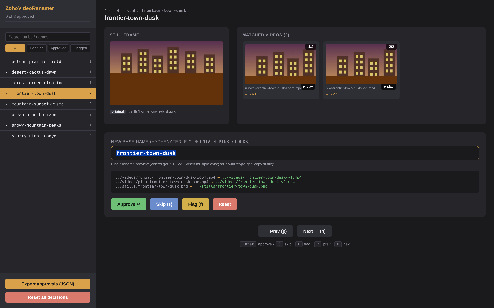
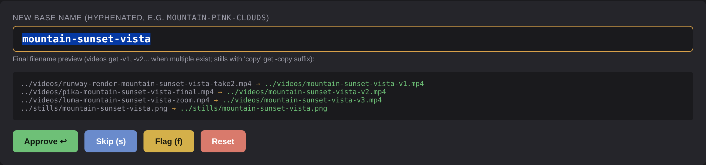

Match your AI-rendered videos to their source stills automatically, propose descriptive names with vision AI, review every pairing in a browser, then bulk-rename with full undo.

Gen-3 Alpha Turbo 1019957322, zoom out, pan out, l, 00290-3597567898 cop, M 5_prob4.mp4
When you generate dozens of videos from source images using tools like Runway, Pika, or Luma, the resulting
filenames are unsortable garbage. Manually renaming each one to something like saloon-night-shootout.mp4
takes hours. ZohoVideoRenamer does it in minutes.
No subscriptions, no cloud uploads, no lock-in. Everything runs locally except the (optional) AI naming calls, which use your own API key.
Pick your stills folder and your videos folder. Hit scan. The tool extracts a stub from each video filename and matches it to the right still — typically 90%+ on the first try.
If your stills are already nicely named (e.g. mountain-sunset.png), videos inherit those names.
Otherwise pass in an Anthropic or OpenAI key and the AI looks at each still and proposes a 3-word descriptive name.
A self-contained HTML interface opens. See each still side-by-side with its matched videos, edit any name, approve/skip/flag with one keypress. Decisions save automatically.
Export approvals, run apply. Every file move is logged so a single command reverses the whole run if something looks wrong.
Built to chew through hundreds of entries quickly. Keyboard-driven (Enter approves, S skips, F flags), live preview of exactly which files will move where, side-by-side still vs. video frame thumbnails, and a play button on every video card so you can verify a match without leaving the page.
State is held in browser localStorage, so you can close the tab, take a break, and pick up where you left off.


The name input shows a live preview of every file that would be moved. Type a name; the preview updates as
you type. Multiple videos for the same still automatically get -v1, -v2, -v3
suffixes. Original and "copy" variants of the same still get distinct destinations so nothing overwrites.
When you actually apply, an undo log lands in the project folder. One command reverses the entire run.
Built for the boring-but-painful case of organizing AI-generated content. Not a SaaS, not a startup — just a single Python package.
Substring + stub-pattern matching catches the embedded source filename that most AI video tools leave behind.
Anthropic Claude or OpenAI GPT-4o for vision-based name proposals. Your keys, your account, your data.
Files never leave your machine. The only network traffic is your own AI API calls, only if you opt in.
Every rename is recorded. undo --execute reverses an entire run if anything looks wrong.
When several videos point at one still, they automatically get -v1, -v2 suffixes.
Enter to approve, S to skip, F to flag, P/N to navigate. Chew through hundreds of entries in minutes.
Just Python + ffmpeg + Pillow. No node_modules, no Docker, no SaaS.
The review UI is a single HTML file. Move it, archive it, email it — works from file://.
Both the GUI app and the Python package require ffmpeg installed locally
(brew install ffmpeg on Mac, official builds on Windows).
The AI naming step is optional and only fires if you explicitly enable it.
Native macOS app. Pick folders in a window, no terminal needed.
Download for macOSNative Windows app. Pick folders in a window, no terminal needed.
Download for WindowsFor developers and power users. Scripts and tinkering welcome.
Install instructions# with Anthropic Claude support pip install zoho-video-renamer[anthropic] # or with OpenAI pip install zoho-video-renamer[openai] # or both pip install zoho-video-renamer[all]
If you'd rather skip the GUI, the same flow works as four CLI calls. Same end result, scriptable.
# 1. Walk both folders, match videos to stills, generate thumbnails zoho-video-renamer scan \ -s ~/Pictures/source-stills \ -v ~/Movies/generated-videos \ -o ./review # 2. (Optional) Ask an AI to propose 3-word names export ANTHROPIC_API_KEY=sk-ant-... zoho-video-renamer ai-name -o ./review --provider anthropic # 3. Open the review UI in your browser zoho-video-renamer review -o ./review # 4. Dry-run, then execute. An undo log is written automatically. zoho-video-renamer apply -o ./review -a ~/Downloads/rename-approvals.json zoho-video-renamer apply -o ./review -a ~/Downloads/rename-approvals.json --execute # 5. If anything looks wrong, undo: zoho-video-renamer undo --log ./review/rename-undo-*.json --execute
00290-3597567898 (common in AI image generators), or a manual label like bg14,
title-blah, or any literal substring that matches one of your stills' filenames.
So if your still is mountain-sunset.png and your video is pika-render-mountain-sunset-v2.mp4,
the substring mountain-sunset matches.unmatched-videos.json and left alone. You can match them
manually after the fact, or rerun with different stills folders. Nothing gets moved or renamed without your approval.apply --execute writes a timestamped undo log to your project folder.
Run zoho-video-renamer undo --log path/to/rename-undo-*.json --execute and every move is reversed.
The log records each rename as (current path → original path), so even partial-failure runs are reversible.pip install and use either the CLI or the
tkinter GUI. AppImage builds may come later.docs/architecture.md for a tour.